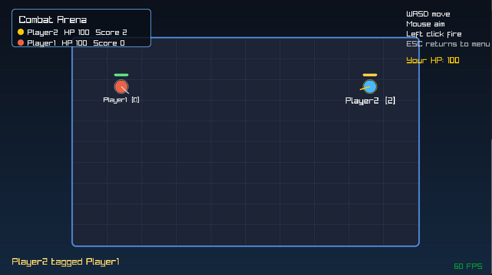

Computer Science & Engineering Student
I am a Computer Science & Engineering student at the University of Nevada, Reno. I focus on software engineering, game development, and systems programming. I enjoy building full-scale interactive applications, from low-level embedded systems to complete games.
Open-world RPG built in Godot using C#. Includes combat, quests, inventory systems, crafting, and Steam integration.
View on SteamReal-time C++ chat system using asynchronous networking with multiple clients and custom commands.
3D simulation using an entity-component system with physics, rendering, and input handling.
This game is a simple multiplayer combat arena built with an Entity Component System (ECS) architecture, where each player connects to a central server and controls their own fighter in a small top-down battlefield. Players move with the keyboard, aim with the mouse, and shoot projectiles to damage opponents, while the server keeps track of positions, health, scores, respawning, and win conditions so that the match stays synchronized for everyone. The program includes a connection menu for entering a username, server IP, and port, then uses a state-machine-based game loop to move between the menu, connecting, active gameplay, and round-over screens. It also features reactive audio that changes depending on whether the player is in the menu, safely in combat, in danger, or at the end of the round, helping make the game feel more responsive and complete.

Email: dillonjanakus@gmail.com
GitHub: github.com/dillonjanakus